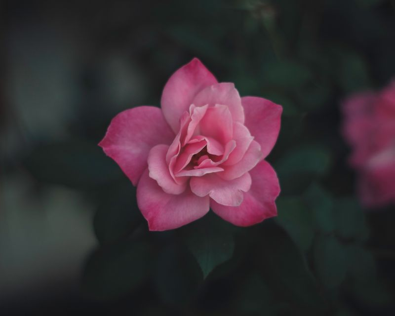
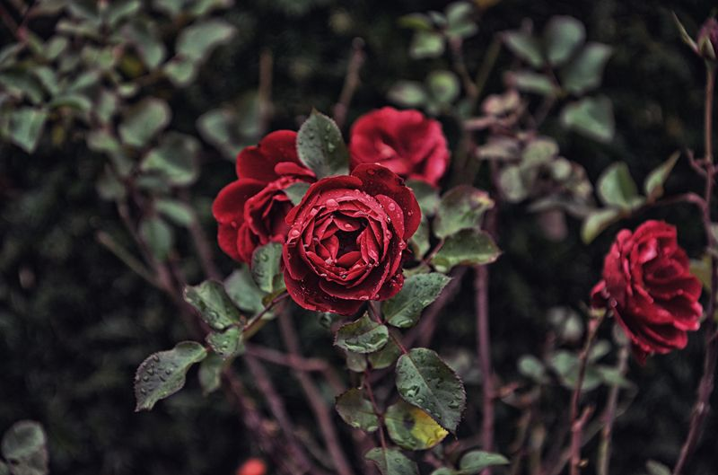
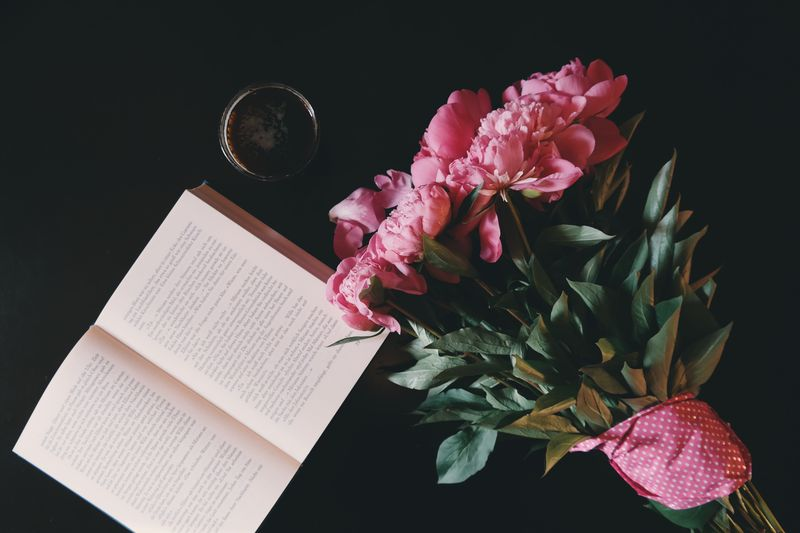

The language of flowers, sometimes called floriography, is a means of cryptological communication through the use or arrangement of flowers. Meaning has been attributed to flowers for thousands of years, and some form of floriography has been practiced in traditional cultures throughout Europe, Asia, and the Middle East. Plants and flowers are used as symbols in the Hebrew Bible, particularly of love and lovers in the Song of Songs, as an emblem for the Israelite people and for the coming Messiah. In Western Culture, William Shakespeare ascribed emblematic meanings to flowers, especially in Hamlet, Prince of Denmark.
Interest in floriography soared in Victorian England and in the United States during the 19th century. Gifts of blooms, plants, and specific floral arrangements were used to send a coded message to the recipient, allowing the sender to express feelings which could not be spoken aloud in Victorian society. Armed with floral dictionaries, Victorians often exchanged small "talking bouquets", called nosegays or tussie-mussies, which could be worn or carried as a fashion accessory.
History
According to Jayne Alcock, Grounds and Gardens Supervisor at The Walled Gardens of Cannington, the renewed Victorian era interest in the language of flowers finds its roots in Ottoman Turkey, specifically the court in Constantinople and an obsession it held with tulips during the first half of the 18th century. The Victorian use of flowers as a means of covert communication bloomed alongside a growing interest in botany.
The floriography craze was introduced to Europe by two people: Englishwoman Mary Wortley Montagu (1689–1762), who brought it to England in 1717, and Aubry de La Mottraye (1674–1743), who introduced it to the Swedish court in 1727. Joseph Hammer-Purgstall's Dictionnaire du language des fleurs (1809) appears to be the first published list associating flowers with symbolic definitions, while the first dictionary of floriography appears in 1819 when Louise Cortambert, writing under the pen name 'Madame Charlotte de la Tour', wrote Le langage des Fleurs.
Floriography was popularized in France about 1810–1850, while in Britain it was popular during the Victorian age (roughly 1820–1880), and in the United States about 1830–1850. La Tour's book stimulated the publishing industry especially in France, England, and America, but also in Belgium, Germany, and other European countries as well as in South America. Publishers from these countries produced hundreds of editions of language of flowers books during the 19th century.
During its peak in America, the language of flowers attracted the attention of the most popular women writers and editors of the day. Sarah Josepha Hale, longtime editor of the Ladies' Magazine and co-editor of Godey's Lady's Book, edited Flora's Interpreter in 1832; it continued in print through the 1860s. Catharine H. Waterman Esling wrote a long poem titled, "The Language of Flowers" which first appeared in 1839 in her own language of flowers book, Flora's Lexicon; it continued in print through the 1860s. Lucy Hooper, an editor, novelist, poet, and playwright, included several of her flower poems in The Lady's Book of Flowers and Poetry, first published in 1841. Frances Sargent Osgood, a poet and friend of Edgar Allan Poe, first published The Poetry of Flowers and Flowers of Poetry in 1841, and it continued in print through the 1860s. Osgood also edited a special gift book, The Floral Offering, in 1847. Sarah Carter Edgarton Mayo, author of several flower books, was associate editor of the Universalist monthly The Ladies' Repository in Boston from 1839 to 1842. Her book, The Flower Vase, was first published in 1844. She also edited the books Fables of Flora in 1844 and The Floral Fortune Teller in 1846. C. M. Kirtland is probably Caroline Matilda Kirkland, editor of the Union Magazine of Literature and Art from 1847 to 1851 and the Unitarian weekly Christian Inquirer from 1847 to 1852. First published in 1848, Kirkland's Poetry of Flowers continued to be in print at least until 1886. One of the more comprehensive books, its 522 pages contain an extensive dictionary and numerous flower poems.
Meanings
The significance assigned to specific flowers in Western culture varied — nearly every flower had multiple associations, listed in the hundreds of floral dictionaries — but a consensus of meaning for common blooms has emerged. Often, definitions derive from the appearance or behavior of the plant itself. For example, the mimosa, or sensitive plant, represents chastity. This is because the leaves of the mimosa close at night, or when touched. Likewise, the deep red rose and its thorns have been used to symbolize both the blood of Christ and the intensity of romantic love, while the rose's five petals are thought to illustrate the five crucifixion wounds of Christ. Pink roses imply a lesser affection, white roses suggest virtue and chastity, and yellow roses stand for friendship or devotion. The black rose (actually a very dark shade of red, purple, or maroon) has a long association with death and dark magic.
In Use
William Shakespeare, Jane Austen, Charlotte and Emily Bronte, and children's novelist Frances Hodgson Burnett, among others, used the language of flowers in their writings. Shakespeare used the word "flower" more than 100 times in his plays and sonnets. In Hamlet, Ophelia mentions and explains the symbolic meaning of pansies, rosemary, fennel, columbine, rue, daisy, and violets. In The Winter's Tale, the princess Perdita wishes that she had violets, daffodils, and primroses to make garlands for her friends. In A Midsummer Night's Dream, Oberon talks to his messenger Pluck amidst a scene of wild flowers. Chuck Palahniuk's 1999 novel Survivor features a discussion of Victorian flower language. Flowers are also often used as a symbol of femininity. John Steinbeck's short story "The Chrysanthemums" centers completely around the yellow florets, which are often associated with optimism and lost love. When the protagonist, Elisa, finds her beloved chrysanthemums tossed on the ground, her hobby and womanhood has been ruined; this suffices the theme of lost appreciation and femininity in Steinbeck's work.
In 2009, Vanessa Diffenbaugh published a New York Times-bestselling novel centered on floriography, The Language of Flowers, as well as her own flower dictionary.
Several Anglican churches in England have paintings, sculpture, or stained glass windows of the lily crucifix, depicting Christ crucified on or holding a lily. One example is a window at The Clopton Chantry Chapel Church in Long Melford, Suffolk, England, UK.
The Victorian Pre-Raphaelites, a group of 19th-century painters and poets who aimed to revive the purer art of the late mediaeval period, captured classic notions of beauty romantically. These artists are known for their idealistic portrayal of women, emphasis on nature and morality, and use of literature and mythology. Flowers laden with symbolism figure prominently in much of their work. John Everett Millais, a founder of the Pre-Raphaelite brotherhood, used oils to create pieces filled with naturalistic elements and rich in floriography. His painting Ophelia (1852) depicts Shakespeare's drowned stargazer floating amid the flowers she describes in Act IV, Scene V of Hamlet.
The Edwardian artist John Singer Sargent spent much time painting outdoors in the English countryside, frequently utilizing floral symbolism. Sargent's first major success came in 1887, with Carnation, Lily, Lily, Rose, a large piece painted on site in the plein air manner, of two young girls lighting lanterns in an English garden.
Photographs by Arthur Miller